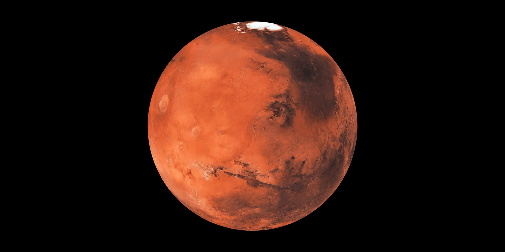
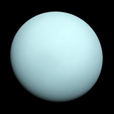

Discover The World That You Are Living In.
The Solar System Planets
Planet Mercury Overview. Mercury the smallest planet in our solar system and nearest to the Sun is only slightly larger than Earth's Moon. Its surface is covered in tens of thousands of impact craters.
From the surface of Mercury, the Sun would appear more than three times as large as it does when viewed from Earth, and the sunlight would be as much as 11 times brighter.
Despite its proximity to the Sun, Mercury is not the hottest planet in our solar system that title belongs to nearby Venus, thanks to its dense atmosphere. But Mercury is the fastest planet, zipping around the Sun every 88 Earth days. Mercury is appropriately named for the swiftest of the ancient Roman gods.

Planet Venus Overview. Venus is a cloud-swaddled planet named for a love goddess, and often called Earth’s twin. But pull up a bit closer, and Venus turns hellish. Our nearest planetary neighbor, the second planet from the Sun, has a surface hot enough to melt lead. The atmosphere is so thick that, from the surface, the Sun is just a smear of light.
In some ways it is more an opposite of Earth than a twin: Venus spins backward, has a day longer than its year, and lacks any semblance of seasons. It might once have been a habitable ocean world, like Earth, but that was at least a billion years ago. A runaway greenhouse effect turned all surface water into vapor, which then leaked slowly into space. The present-day surface of volcanic rock is blasted by high temperatures and pressures. Asked if the surface of Venus is likely to be life-bearing today, we can give a quick answer: a hard “no.”
Further, Venus may hold lessons about what it takes for life to get its start on Earth, in our solar system, or across the galaxy. The ingredients are all there, or at least, they used to be. By studying why our neighbor world went in such a different direction with regard to habitability, we could find out what could make other worlds right. And while it might sound absurd, we can’t rule out life on Venus entirely. Temperature, air pressure, and chemistry are much more congenial up high, in those thick, yellow clouds.

Planet Earth Overview. our home planet, is a world unlike any other. The third planet from the sun, Earth is the only place in the known universe confirmed to host life.
With a radius of 3,959 miles, Earth is the fifth largest planet in our solar system, and it's the only one known for sure to have liquid water on its surface. Earth is also unique in terms of monikers. Every other solar system planet was named for a Greek or Roman deity, but for at least a thousand years, some cultures have described our world using the Germanic word “earth,” which means simply “the ground.”
.jpg)
Planet Mars Overview. Mars is no place for the faint-hearted. It’s dry, rocky, and bitter cold. The fourth planet from the Sun, Mars is one of Earth's two closest planetary neighbors (Venus is the other). Mars is one of the easiest planets to spot in the night sky it looks like a bright red point of light.
Despite being inhospitable to humans, robotic explorers like NASA's Perseverance rover are serving as pathfinders to eventually get humans to the surface of the Red Planet.

Planet Jupiter Overview. Jupiter is the fifth planet from our Sun and is, by far, the largest planet in the solar system more than twice as massive as all the other planets combined.
Jupiter's stripes and swirls are actually cold, windy clouds of ammonia and water, floating in an atmosphere of hydrogen and helium. Jupiter’s iconic Great Red Spot is a giant storm bigger than Earth that has raged for hundreds of years.
Jupiter is named for the king of the ancient Roman gods.

Planet Saturn Overview. Saturn is the sixth planet from the Sun and the second largest planet in our solar system. Adorned with a dazzling system of icy rings, Saturn is unique among the planets.
It is not the only planet to have rings, but none are as spectacular or as complex as Saturn's. Like fellow gas giant Jupiter, Saturn is a massive ball made mostly of hydrogen and helium.
The farthest planet from Earth discovered by the unaided human eye, Saturn has been known since ancient times. The planet is named for the Roman god of agriculture and wealth, who was also the father of Jupiter.

Planet Uranus Overview. Uranus is the seventh planet from the Sun, and it's the third largest planet in our solar system about four times wider than Earth. The diameter at its equator is 31,763 miles (51,120 kilometers).
Uranus is a very cold and windy planet. It is surrounded by faint rings, and more than two dozen small moons as it rotates at a nearly 90-degree angle from the plane of its orbit. This unique tilt makes Uranus appear to spin on its side.
Uranus is blue-green in color due to large amounts of methane, which absorbs red light but allows blues to be reflected back into space. The atmosphere is mostly hydrogen and helium, but also includes large amounts of water, ammonia and methane.
Astronomer William Herschel tried unsuccessfully to name his discovery Georgium Sidus (George's star in Latin) after his patron, England's King George III. Instead, the planet was eventually named for Uranus, the Greek god of the sky, who was also the father of Kronos (or Saturn in Roman mythology).

Planet Neptune Overview. Dark, cold and whipped by supersonic winds, giant Neptune is the eighth and most distant major planet orbiting our Sun. More than 30 times as far from the Sun as Earth, Neptune is not visible to the naked eye. In 2011, Neptune completed its first 165-year orbit since its discovery.
The planet’s rich blue color comes from methane in its atmosphere, which absorbs red wavelengths of light, but allows blue ones to be reflected back into space.
Neptune was the first planet located through mathematical calculations. Using predictions sent to him by French astronomer Urbain Le Verrier, based on disturbances in the orbit of Uranus, German astronomer Johann Galle was the first to observe the planet in 1846. The planet is named after the Roman god of the sea, as suggested by Le Verrier.

Planet Pluto Overview.
Pluto is a dwarf planet located in a distant region of our solar system beyond Neptune known as the Kuiper Belt. Pluto was long considered our ninth planet, but the International Astronomical Union reclassified Pluto as a dwarf planet in 2006.
NASA's New Horizons was the first spacecraft to explore Pluto up close, flying by the dwarf planet and its moons in 2015. It found that Pluto is a complex world with mountains, valleys, plains, craters, and apparently even glaciers.
Pluto was discovered in 1930 by astronomer Clyde Tombaugh at the Lowell Observatory in Flagstaff, Arizona. It was named by 11-year-old Venetia Burney of Oxford, England.